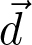
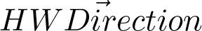

Simulating Wind and Warmth in Virtual Reality: Conception, Realization and Evaluation for a CAVE Environment
urn:nbn:de:0009-6-40759
Abstract
Wind and warmth sensations proved to be able to enhance users' state of presence in Virtual Reality applications. Still, only few projects deal with their detailed effect on the user and general ways of implementing such stimuli. This work tries to fill this gap: After analyzing requirements for hardware and software concerning wind and warmth simulations, a hardware and also a software setup for the application in a CAVE environment is proposed. The setup is evaluated with regard to technical details and requirements, but also - in the form of a pilot study - in view of user experience and presence. Our setup proved to comply with the requirements and leads to satisfactory results. To our knowledge, the low cost simulation system (approx. 2200 Euro) presented here is one of the most extensive, most flexible and best evaluated systems for creating wind and warmth stimuli in CAVE-based VR applications.
Keywords: multisensory stimuli, wind simulation, warmth simulation, presence, virtual reality
Keywords: multisensory stimuli, wind simulation, warmth simulation, presence, virtual reality
:
Enhancing presence is one of the most important topics in Virtual Reality research. Recent work shows that a high level of presence can be achieved, for example by a reasonable combination of feedback modalities [ FW13 ]. Due to technical advancement, virtual worlds have already become more and more immersive. In this area, especially concerning rendering techniques and spatial sound, many advances have been made. But how can further natural sensations, e.g. airflow during navigation tasks, heat of a fire in a rescue scenario [ MKB13 ] or simply the warmth inside a simulated desert be made perceivable in virtual environments? A common type of VR applications consists of navigation tasks which - in reality - include stimuli like airflow or changes in temperature. Hence we suppose that an extension of VR setups with wind and warmth will improve users' state of presence. The hypothesis of improved presence through multisensory stimuli is supported by empirical work that shows the ability of these modalities to do so (e.g. [ DNH99 ], [ CTV07 ], [ FW13 ]), although the visual sense is the most dominant sense for humans (rods and cones inside the human eye represent 70 percent of all human sensory cells [ CRT09 ]).
Only little work has been published in this field. There is no standardized hardware nor well grounded concepts for creating wind and warmth sensations and embedding them in VR environments. Furthermore, experimental results concerning the perception of wind and warmth sensations in VR setups are rare. This paper is an extension of the work first presented in [ HMFW13 ]. The concepts described in that paper are summarized and extended by a detailed hardware and software description followed by an extensive technical evaluation. The steps conducted on the way toward a wind and warmth simulator are the following:
-
Identification of requirements concerning wind and warmth simulations in VR systems which are independent from the applied VR setup (e.g. CAVE vs. HMD)
-
Discussion of possible hardware and selection of the most suitable system for the available environment (three-sided CAVE)
-
Conception of an abstract model which embeds wind and warmth in existing VR environments
-
Implementation of the software model and of the hardware components in a suitable and efficient way, keeping as much independence of precise hardware and software environments as possible
-
Technical evaluation of the setup
-
Pilot studies gaining information on user experience and presence
The paper is organized as follows: The second section gives an overview of related work, dealing with wind and warmth simulations in VR and their perception in humans. The third section gives details of requirements on hardware components and on the software implementation. Afterwards a model for representing wind and warmth in VR is given in Section 4. Section 5 describes the actual implementation, starting with the hardware installation followed by the software components. An evaluation of the system is presented in Section 6 containing a technical evaluation, and a pilot study analyzing the influence of the simulation on user experience. The last section summarizes the presented system and outlines future work, projecting a more detailed subjective evaluation of the system in terms of user studies.
As Dinh et al. [ DNH99 ] have pointed out, the introduction of multiple feedback modalities can enhance the level of presence a user perceives in a VR environment. Many systems have been developed, adding single modalities to a graphics system. These have mostly been auditive (e.g. [ HMWK10 ], [ LVK01 ]) or haptic enrichments (e.g. [ Bur96 ], [ WSHP13 ]). Some efforts including olfactory stimuli can be found, either using global displays, which fill a whole room with odor, or presenting scents via a wearable device. The main problem using global approaches is the neutralization of the submitted smell. One system minimizing this problem is introduced by Yanagida et al. [ YKN04 ]. Wearable devices as presented in [ YYT06 ] or [ HIAI13 ], have the drawback of being restrictive and are often regarded as being too intrusive. Concerning wind and warmth simulations, some approaches have been presented which will be described in the following.
One example for the integration of wind is the VR-Scooter described by Deligiannidis and Jacob [ DJ06 ]. A real scooter is used for navigation inside the VR and generates tactile feedback using vibrotactile actuators. In addition, a fan provides wind in front of the user. The authors detected that perceived wind improves both, task performance and subjective user experience. The main disadvantage of their system is the inability to provide directional wind. Thus the system is only useful in a rather narrow scope.
Moon and Kim introduced a setup which consists of 20 fans arranged in three horizontal levels around the user [ MK04 ]. A study showed that users cannot distinguish between winds which come from neighboring fans, if the angle in between is less than 45 degrees. The system presented by Moon and Kim was able to significantly enhance presence due to the application of wind feedback. However, it was unable to compute the wind influence in realtime: The authors used an editor to design the wind field manually for each scene beforehand.
In 2013, Verlinden et al. presented a sail simulator which was extended by a wind simulation to increase presence [ VMV13 ]. Eight fans are mounted at a height of two meters on top of the floor. All fans are arranged in a circle with a diameter of four meters. The user is sitting inside a simulator having the outward appearance of a real boat. Graphics are projected on a screen in front of the user. The system was evaluated with 10 test subjects. The results showed an improvement of immersion when using the wind feedback. Furthermore the participants reported that the wind simulation had helped them to orient. On the other hand, most of them perceived the wind sensations as being too weak. Also, the simulation suffered from the sound created by the fans.
Another approach is presented by Kulkarni et al. who used the vortices of an airflow on the projection wall to adapt the direction of a presented wind up to an accuracy of 1-2 ° degrees [ KMD12 ]. However, the system can only be used with a certain display arrangement and is thus not usable for a CAVE environment. Also wind angles are only possible to be perceived in the interval [-30 °, 30 °]. Furthermore the wind cannot be created in realtime. A delay of 2 to 25 seconds appears when creating certain wind directions.
In addition to the above mentioned stationary systems, solutions directly mounted on the user's head are presented e.g. by Lehmann et al. [ LGWS09 ]. In their approach, a comparison of stationary global and local systems attached to the user was conducted: In a ski simulation, three conditions (no wind, stationary fans, head-mounted fans) were tested in a within-subjects study. The difference between stationary fans and head-mounted fans was not significant, but at least indicated a trend toward a higher level of presence when using the stationary wind sources. Further results showed a significantly higher level of presence when using wind compared to the no-wind condition.
Concerning the role of warmth in VR, there is only little research. Dionisio published an evaluation of possible hardware devices for temperature sensations in 1996, concluding that fans, infrared lamps and Peltier elements are the best option for VR-centered temperature simulations [ Dio97a ]. An exemplary setup was introduced as a "virtual hell" [ Dio97b ], with each three fans and infrared lamps arranged around the user, as well as Peltier elements attached directly to the skin.
To find thresholds concerning the perception of heat and cold, Gray et al. [ GSM82 ] performed a study using Peltier elements as temperature actuator. Thresholds were found at changes of a temperature rise of 1.04 degrees Celsius and a drop of 0.15 degrees Celsius: Interestingly, a negative change in temperature is more easily perceived than a positive change.
As only few projects combine wind and warmth simulations with Virtual Reality setups, a detailed investigation of necessary requirements is mandatory. These should be divided into hardware and software requirements being independent from each other. This assures a maximal extensibility and generality of the concepts. Furthermore, the requirements should be independent from a specific implementation and also from the existing setup (e.g. HMD vs. Cave and standardized VR framework vs. self-developed system) in which a wind and warmth system is integrated.
A first requirement is that the system must be save: Especially when using heat sources, neither the user nor the existing system itself must be endangered. Therefore, a direct contact between user and heat sources must be avoided. For instance the position of heat sources mounted on top of the user has to be adapted according to the user's height. Temperature limits have to be selected carefully, because many hardware components, e.g. projectors or the tracking system, are heat-sensitive. Thus temperature sensors must be used to monitor the overall heat created.
Further, the system must be capable of real-time interactivity. A low latency toward the user's actions (e.g. switching on/off a virtual fan or closing the coverage of a virtual chimney) is required to apply the simulation in a realistic Virtual Reality.
As the user is able to change translation and rotation inside the virtual world, the simulation must adapt to the transformation of a wind and warmth source continuously. Otherwise, a gap between visual feedback and the sensations perceived could appear and decrease the user's sense of presence [ WS98 ].
If the above mentioned criteria are satisfied, it must be ensured that the user's interaction possibilities are not limited by new hardware: Some hardware solutions (e.g. concerning eyetracking [ HDP11 ]) influence the user's behavior due to cables and hardware attached directly to the user. Furthermore, the existing hardware itself (e.g. projection or tracking) must not be affected.
The following listing summarizes the proposed hardware requirements arranged by priority:
HW1 Do not endanger the user or hardware by the setup
HW2 Provide real-time and low latency
HW3 Allow adaptation of the sensation's direction
HW4 Prevent disturbance of existing hardware and interaction possibilities
Additional to the hardware requirements, the software system must also satisfy certain constraints. First of all, real-time capability must be ensured: A direct reaction to the user's actions is necessary in a Virtual Reality simulation. Otherwise, the gap between visual information and wind and warmth sensations could lead to decreased presence. Altough, a realistic rendering is desirable, a physically modeled simulation for calculating the exact influences of wind and warmth sources would need too much computational power. Also, it is doubtable whether such a realistic simulation is necessary (e.g. for rendering light and sound, simplified models like the Phong lighting model are applied successfully). Therefore, a balance between realism and computational costs has to be found.
Inside the simulation, the user should be able to move freely with six degrees of freedom. Therefore, the user must be represented inside the simulation and the software has to be able to adapt the sensation's direction and position according to the user's actions. Furthermore, virtual occlusions must be considered: If a user is placed inside a virtual building or behind a wall, sensing the same sensations as outside would be unnatural and thus disrupt perceived presence inside the scene. The system must react to a changed distance between wind/warmth source and the user. Hence, an appropriate attenuation function has to be found.
Wind and warmth sensations appear in different situations and are created by different causations: airstream created by the user's movement, storm belonging to the simulation of a landscape, virtual fans, a fire inside a rescue scenario et cetera. Therefore, an abstract model which forms the basis for simulating a large set of different sensation sources inside a VR framework has to be found. To be able to integrate the system in an existing Virtual Reality setup, also appropriate scales must be found for quantifying the stimuli: This could be for example m / s for wind or degrees Celsius for warmth.
When using a combination of wind and warmth sources, crossmodal influences could appear between wind and warmth (as using wind also influences the perceived temperature [ Dio97a ]) or wind-blown dispersal at the projection walls. Such influences need to be analyzed and considered when calculating the input signal of the hardware system.
Last but not least, the system should be able to use the full power of the hardware devices. The following listing summarizes the software requirements arranged by priority:
SW1 Provide real-time, low latency and a balance between realism and computational costs
SW2 Adapt user's position and orientation inside the virtual world
SW3 Consider occlusions
SW4 Use an appropriate attenuation function
SW5 Provide an abstract model to represent different types of wind and heat sources
SW6 Provide appropriate scales to describe the sensations' intensity
SW7 Consider crossmodal influences (e.g. influence of wind on warmth perception)
SW8 Use algorithms able to exploit the full power of the hardware
A physically modeled simulation of wind and warmth would be too complex to compute in real-time and with low latency. The model presented here describes an approximation for the application in a VR context. For managing the VR scene, a scene graph is used. Inside the scene graph, each object (e.g. a 3D model) and all further entities (e.g. scripts controlling the application) are represented as so-called nodes. Hence, each wind and warmth source is also represented as a single node. The VR framework sends these nodes and further relevant parts of the scene to a dedicated sensation engine. This engine calculates the influence of the wind and warmth nodes on the scene and activates the hardware components. Figure 1 illustrates this process.
Figure 1. Short overview on the system's process flow. Parts of the InstantReality scenegraph (middle) is transfered to the Sensation Engine (right) which activates the wind and warmth hardware (left) and informs the scenegraph about changes in e.g. airflow.
Our concept to represent wind and warmth nodes is inspired by the Phong lighting model and also by the representation of sound objects inside Virtual Reality applications first presented by Fröhlich and Wachsmuth [ FW12 ]. They present three kinds of sound: ambient sound, static sound and event sound. Ambient sound can be perceived in large areas inside a scene and does not have a position. It is played with the same intensity on all available speakers. Only one ambient sound can be played at the same time. Static sounds are emitted directly by an object to which they are attached. A static sound's transformation is changed automatically when the transformation of the corresponding object is changed. The output of the individual speakers is adapted to intensity and direction of the sound and to the relative user position and rotation. Event sounds are related to the static sounds, but only triggered due to a certain event: This could be a ball hitting a surface e.g. water, stone or a virtual door shut by a user.
To simulate different types of sensations (e.g. fans, fire et cetera), the following wind and warmth node types were developed according to the above mentioned concept:
-
Directional wind / directional warmth
-
Spot wind
-
Point warmth
The naming is inspired by the concept of representing light sources in the X3D standard. The instances of the nodetypes directional wind / directional warmth have an infinite distance towards the user and are analogous to the ambient sound nodes. Accordingly, they are perceivable inside the whole scene from the same direction (except from virtual occlusions). Examples for the usage of these nodetypes could be weather influences like storms or the effect of the sun. Nodes of the type spot wind have a fixed position and are bound to an object (e.g. to a virtual fan). These wind sources only influence the area which lies in a directed cone located in the wind source. The cone is defined by a given angle and the intensity of the wind source (cf. figure 2). The nodetype point warmth is similar to the spot wind: It is bound to a certain object (e.g. a virtual chimney), but it has no direction. The warmth is emitted toward all directions and therefore the node is represented by a sphere. The radius of the sphere is defined by the node's intensity. Both nodetypes can be seen as analogous to static and event sound.
This chapter describes the actual implementation of the wind and warmth simulation system according to the requirements, starting with an overview of the existing VR environment, followed by descriptions of the hardware and software components.
The stimuli are presented inside a three-sided (floor, front, left) CAVE environment. Six projectors use polarized light for enabling stereoscopic vision. User tracking is performed by a marker-based DTrack2 system by ART, using 10 cameras. The cameras use infrared light reflections for marker tracking. Spatial sound is enabled by a 8.1 sound system: Eight active speakers are arranged in a cube around the CAVE, a subwoofer system is embedded in the CAVE floor. An air conditioner assures a constant temperature of about 20 degrees Celsius. It does not produce any wind which could be perceived inside the CAVE.
To calculate the distributed graphical output, the InstantReality framework by the Fraunhofer IGD is applied. It is augmented by knowledge-based approaches for managing and representing sound, haptics et cetera as mentioned in [ FW12 ]. The scene itself is represented using an X3D-based scene graph.
Wind For the simulation of wind, the following solutions were considered:
-
Accurate simulation of the wind direction using an industrial fan and an approach as presented in [ KMD12 ]
-
CPU fans attached to the user as used in [ LGWS09 ], [ CTV07 ] and similar approaches
-
Large scale fans attached to the CAVE hardware as used in [ VMV13 ]
-
Air conditioner
-
Wind machines as used for special effects in films
In the following, the decision to use large scale fans attached to the CAVE hardware is explained. Arguments are followed by the related hardware requirements in parentheses. An accurate simulation of the wind direction as presented in [ KMD12 ] is not possible, because of the construction of the CAVE. Furthermore, their solution is not real-time capable (HW2). While CPU fans are a cheap solution and easy to control, they have to be attached directly to the user to provide a sufficient wind simulation. Hardware attached to the user could lead to a reduced usability, because the user feels limited by the hardware and may not act naturally anymore (HW4). The wind created by an air conditioner is difficult to control concerning the intensity, but also with regard to the wind direction (HW3). Wind machines which could be able to simulate a very realistic sensation of wind are too noisy und would thus disrupt the user's presence (HW4). Thus the only solution fully satisfying the constraints is attaching large scale fans directly to the CAVE: Eight fans by ADDA are attached in a circle above the projection walls with an angle of 45 degrees in between. The frontal fans could not be placed as optimal as the other fans for technical reasons: The back-projection mirror for the floor needs too much free space.
Finally, due to the angle approximating the 45 degrees proposed by Moon et al. [ MK04 ], the wind direction can be simulated continuously on the horizontal plane (HW3). A direct contact between fans and user or other parts of the hardware is prevented by their positioning. Therefore, endangering user or hardware can be excluded (HW1). Each fan has a diameter of 25.4 cm and a wind performance of 12.735 m³ / min. All fans are operated at 115 instead of 230 Volt to reduce noise (HW4): From a distance of one meter, a noise volume of 55.6 dB/A can be measured. Figure 3 shows a single fan and the mounting of the hardware inside the CAVE. Figure 4 details the overall hardware architecture. Table 1 summarizes the technical data. All fans are controlled in real-time via MultiDimMKIII Dimmerpacks by ShowTec (HW2).
Table 1. Axialfan: Detailed technical data.
|
|
Fan Specification |
|
Device Name |
Axialfan AK25489 by ADDA |
|
Emitted Noise |
55.6 dB/A |
|
Power |
24.2 W |
|
Voltage |
115 V |
|
Shielding Angle (one direction) |
approx. 35 ° |
|
Maximum Intensity |
12.735 m³ / min |
|
Diameter |
25.4 cm |
|
Weight |
2.00 kg |
|
Cost |
60 Euro |
Warmth According to Dionisio [ Dio97a ] the following hardware solutions were considered:
-
Heater blower
-
Infrared lamps
-
Peltier elements
-
Radiant heater
-
Air conditioner
-
Electric blankets/suits
In the following, the decision to use infrared lamps is explained similar to the argumentation concerning the wind hardware. A radiant heater would - because of the usage of gas fuel - be too dangerous for the usage in the VR lab (HW1). The air conditioner was excluded because of its inertness, not being capable of real-time heating and because it requires a complex control mechanism without standardized interfaces (HW2). For most radiant heaters, the temperature cannot be set continuously (HW3). Furthermore, they need a time range of about one minute to reach an adequate temperature and thus are not real-time capable (HW2). In related projects, Peltier elements are used [ Dio97a ]. However, they must be attached directly to the user. This would raise the risk to reduce the system's usability and thus also the perceivable presence (HW4). Electric blankets or warming suits were also excluded, because like the Peltier elements, they could lead to a reduced usability (HW4).
Finally, only infrared lamps appear to be usable for warmth simulations inside a CAVE: They endanger (if the overall temperature is controlled by sensors) neither user nor hardware (HW1) and react instantly (HW2). Nevertheless, a system consisting of one infrared lamp would be unable to simulate spatial warmth (HW3). Furthermore, the warmth intensity created by a single lamp using standard E27 sockets is not sufficient. Therefore, a system consisting of six infrared lamps placed on top of the CAVE is selected. Each lamp has a power of 250 Watt and is able to heat the area directly around the lamp to up to 100 degrees Celsius. All lamps are placed on top of the CAVE to prevent a distraction from the hardware setup (HW4) and because the user's head is, according to [ KHK09 ], one of the most sensitive areas for warmth stimuli (most other parts of the body are covered with clothes). The lamps distance toward the user can be varied according to the user's height (HW1). To prevent the system from getting too hot, two M-ware® temperature sensors are attached to the CAVE (HW1). Unfortunately the infrared lamps emit some visible light, which distorts the projection. Therefore heat-proof color foils are attached in front of the lamps; sideward, they are surrounded by metal (HW4). If a lamp is directed toward a tracking camera, a part of its field of view is distorted. These areas are automatically determined and excluded from tracking. Thus the appearance of false positives when switching on the lamps is prohibited. A part of the technical evaluation presented in Section 6.1.1 shows that tracking is not affected by the usage of the lamps (HW4). Like the fans, the infrared lamps are also controlled in real-time by MultiDimMKIII Dimmerpacks (HW2). Figure 3 shows a single infrared lamp with the heat-proof color foil, the metal surrounding and the mounting inside the CAVE.
Figure 3. Axialfan AK25489 by ADDA and infrared lamp with color foils and metal surrounding mounted on top of the CAVE with the projection switched on.
Figure 3 shows the mounting of fans and infrared lamps inside the CAVE. Figure 4 gives an overview of the whole setup containing the hardware for creating wind and warmth.
Table 2. Detailed technical data of a single infrared lamp.
|
|
Lamp Specification |
|
Device Name |
Osram THERA R126 Red |
|
Emitted Noise |
not noticeable |
|
Power |
250 W |
|
Voltage |
240 V |
|
Shielding Angle (one direction) |
30 ° |
|
Maximum Intensity |
100 °C |
|
Diameter |
15 cm (incl. surrouding) |
|
Weight |
0.12 kg |
|
Cost |
10 Euro |
The software implementation consists of three main components: A wrapper for the above mentioned wind and warmth sources represented in the Virtual Reality framework (InstantReality), the sensation engine and a library loaded to establish the connection between VR framework and sensation engine. The library loaded by the VR framework sends all necessary changes inside the scene to the sensation engine. This is performed in fixed intervals. Afterwards, the engine calculates the activation of the wind and warmth hardware and propagates changes throughout the VR framework. Figure 5 describes the information flow between the components of the wind and warmth framework.
Figure 5. Information flow between the components in the wind and warmth framework as part of the VR framework.
The implementation of the sensation sources inside the VR framework consists of one wrapper node for each wind and warmth nodetype: directional wind, directional warmth, spot wind and point warmth. Furthermore, physical objects which are able to react to changes of the wind intensity (e.g. clouds, falling leaves, flags) are enriched via a connection to the sensation engine: The engine informs them about the airflow at their current position. The detection of virtual occlusions is implemented inside the graphics framework: Transfering all necessary geometries for occlusion checks to the sensation engine, would create unnecessary load for the network connection. For each object influenceable by wind effects and for the user himself, occlusions are checked as described in Algorithm 1.
Algorithm 1. Occlusion check. The constant MAX_DISTANCE ensures that objects like trees or small hills which are too far away from the user can be ignored for occlusion. d is the distance between the position of the object for which the wind influence is tested and the point which is hit by the ray.
The library establishing the link between VR framework and sensation engine acts as a parser for the node format used in the VR framework. The nodes are serialized for the sensation engine and the information provided by the engine is transformed into valid nodetypes of the corresponding VR framework. This approach allows the usage of different VR/Graphics frameworks, e.g. InstantReality, Unity, Unreal Engine, Blender et cetera. Inside the sensation engine, the following steps are executed:
The calculations to activate the hardware are described in algorithm 2: The activation for each hardware component has to be calculated for each sensation node via using the angle between  (vector from sensation node to user position) and  (vector from hardware component to user). Afterwards all activations for each hardware component are summed up and normalized. Here, it is assumed that wind and warmth sensations which have an influence on each other accumulate additive which was suggested by preceding tests. The hardware is controlled via the DMX protocol.
Algorithm 2. Mapping of sensation nodes on the hardware components satisfying requirement (SW2) and (SW8). Here, HWComponents stands for the fans and infrared lamps. HWDirection is the direction of the mounted hardware component toward the user.
The system installed at Bielefeld University was evaluated with respect to technical properties of the hardware and software parts. Furthermore, a pilot study indicated a high level of presence and user experience which could be reached by the system. This section first presents technical evaluations followed by two user studies. The first one analyzes the accuracy with which the wind direction can be estimated by users, the reaction times regarding wind and warmth stimuli and the minimal activation of the hardware which is necessary to have any effect on the user. The second user study analyzes the subjective user experience.
To evaluate the technical setup objectively, the following questions have to be answered:
-
Do the infrared heat lamps interfere with the infrared-based tracking system?
-
How much latency does the system have and how many wind and warmth sources can be added to a particular scene without reducing the overall performance?
-
What is the size of the volume influenced by the wind and warmth hardware and what are the possible maximum values for wind speed and temperature?
As the tracking system uses infrared light reflections to determine the position of the markers, the tracking performance could suffer from the use of the infrared lamps. To analyze the possible influence of the lamps, a tool measuring the size of the tracking volume has been developed and works as follows:
First, the coverage of the original setup (without the use of infrared lamps) is determined. Afterwards, all infrared lamps are switched on with full power. Some of the tracking cameras are directly spotted by the lamps. This leads to some areas in the lens coverage of single cameras which are not usable for tracking. These areas are automatically excluded in a calibration pass. Figure 6 visualizes the areas excluded for single cameras. The target is then again moved through the CAVE. Afterwards, the results with and without infrared lamps can be compared.
Figure 6. Each box displays the analyzed image for a single tracking camera. The dark areas are excluded from tracking, because they are directly spotted by the infrared lamps.
The coverage was measured for three kinds of targets: A worn passive rigid body with strong signs of usage, a new passive rigid body, and an active target used for handtracking.
Table 3. Percentage of covered tracking volume for three kinds of targets. Results were the same with and without infrared lamps.
|
Target |
Coverage |
|
Worn passive |
55 % |
|
New passive |
96 % |
|
Active |
81 % |
The tracking volume was not influenced in any of the tests. Table 3 shows the results which were the same for both tests. Yet it must be suspected that in a different setting (e.g. with more infrared lamps or with fewer tracking cameras), the tracking could be affected by the lamps. In these cases, the lens coverage directly disturbed by the lamps might be too large which would make it impossible to exclude it from tracking without reducing the trackable volume. Nevertheless, using enough tracking cameras (10 in our case), the overall quality of the tracking is not influenced by the use of the infrared lamps.
The sensation simulator runs at about 30 fps. To determine the time, the wind and warmth actuators need to influence the area at the center of the CAVE, the following experiment was conducted: The hardware components are activated as if a virtual wind or warmth source would be presented toward a user. In the center of the CAVE, a device to measure the stimulus is placed inside the volume the user's head normally fills. Afterwards, the wind node is activated and the time after the measurement device detects a change in wind speed is taken. A similar experiment was conducted to measure the reaction time of the lamps. After determining the time, the lamps and fans need to be switched on and make their sensations perceivable inside the CAVE. The time to deactivate the stimuli is measured using a similar procedure.
To minimize the delay the measurement device for wind speed induces, it was replaced by a simple pendulum trackable by the ART tracking system. The time the pendulum needed to be affected by the wind was measured. For measuring the warmth, a VOLTCRAFT IR 280 measurement device was used (latency < 0.5 s).
Warmth needed 1.5 seconds to influence the measured area after the lamps were switched on and 1.8 seconds to create a measurable temperature difference after switching the lamps off. The values for wind were 2.1 seconds for switching on and 1.1 seconds for switching off. The hardware itself reacts instantly, the measured values represent the time which the air at the center of the CAVE needs to be moved by the fans or to be heated by the lamps.
In a second step, the number of possible wind and warmth sources in a typical VR scene was tested: A number of 150 to 200 wind or warmth sources can be used simultaneously without reducing the framerate. As for typical VR scenes, not more than 10 or 20 different stimuli sources are used, the wind and warmth system does not affect the overall simulation performance.
To determine the intensity distribution of the presented stimuli, the intensity of a single wind and a single warmth source was measured on 20 points equally distributed on a horizontal grid inside the CAVE. As intensity measure, meters per second (m / s) were used to describe the wind intensity, and degrees Celsius were used to describe the warmth intensity. A wind measurement device by ELV was used to determine the wind speed. As temperature sensor, the VOLTCRAFT IR 280 was used. Figure 7 shows the grid and the infrared lamps and fans used to simulate the virtual wind and warmth source: Both stimuli have their origin directly in front of the typical user position. The size of the hardware devices shown in the figure relatively depicts their activation level.
Figure 7. Grid to measure the distribution of wind and warmth inside the CAVE. The pictured hardware devices' size relatively depicts their activation level. Each box inside the graphic visualizes one measurement point.
The warmth distribution was investigated on three planes with a vertical distance of 25 cm, 35 cm and 45 cm toward the lamps. If all infrared lamps are switched off, the room has a basic temperature of about 20 °C. This temperature is normally assured by two air conditioners. However, the lamps are able to heat the room temporarily, because of the slow reaction time of the air conditioners. After activating the simulation of a virtual warmth source directly behind the front wall of the CAVE, the highest temperature measured on the grid was 28.7 °C, which is a possible temperature increase of 8.5 °C. The lowest temperature measured on the grid was 22.6 °C. Figure 8 shows the warmth distribution on the grid for all three planes. The results indicate that a high level of temperature increase is possible (7.1 °C more than the threshold determined by Gray et al. to make warmth perceivable on the skin [ GSM82 ]). The temperature is distributed quite constantly inside the whole CAVE area. Therefore it is assumed that the warmth direction cannot be perceived by possible users in a solid way.
Figure 8. Distribution of warmth inside the CAVE depending on the vertical distance toward the infrared lamps.

The wind distribution is measured on 5 planes with a vertical distance of 45 cm, 55 cm, 65 cm, 75 cm and 85 cm toward the fans. Without activating any virtual wind source, no wind flow can be measured inside the whole area. After activating the simulation of a virtual wind source directly behind the front wall, a maximum wind speed of 19.7 m / s can be measured. It is eye-catching that the wind intensity strongly depends on the position and direction of the fans. For this evaluation a frontal wind source was used, because this represents the worst case concerning the wind distribution: The frontal fans are not placed as equal as the other fans inside the setup as explained in Section 3.1. The results (see Figure 9) suggest that the best area to perceive wind sources from arbitrary directions is in the center of the CAVE. Although the influence is quite moderate, the results for different vertical distances are balanced and a wind speed of 2.3 m / s on average (45 cm: 3.6 m / s, 55 cm: 4.4 m / s, 65 cm: 3.6 m / s, 75 and 85 cm: 0 m / s - too little wind to be measurable) can be measured in the center of the CAVE. Furthermore, an equal wind quality for most possible wind directions is expected for this central position which is also the most typical position of the user in many applications.
Figure 9. Distribution of wind inside the CAVE depending on the vertical distance toward the fans.
In a user-centered evaluation, the following questions were investigated:
-
How precisely can the direction of presented virtual wind sources be estimated by test subjects? [1]
-
What is users' reaction time toward the activation and deactivation of presented wind and warmth stimuli?
-
How much activation must be at least provided by the fans and the infrared lamps to make the stimulus perceivable?
To answer these questions, a small study with N = 9 subjects was conducted. Their age ranged between 20 and 51 years (M = 22.67, SD = 10.3). They were recruited through postings in the university building and all of them were native speakers of German. Most were students at Bielefeld University, three were female. The design comprises three steps with the same participants. First, a set of given wind directions had to be estimated by the participants. A Nintendo Wii remote was used to point at the estimated wind direction. Second, the reaction times were evaluated, and third the activation thresholds were tested. To reduce hints on possible activations of hardware components, participants were blindfolded in each stage of the experiment in which wind was used. Additionally, an artificial wind sound was faded in - independently from the actual activation of the hardware - to prevent participants from hearing the fans.
Before starting the experiment, the participant was placed in the center of the CAVE. The Nintendo Wii remote equipped with a tracking target was placed in the dominant hand. At first, the accuracy for determining wind directions was tested. As pointing with the Wii remote could be error-prone and because not all possible participants could be expected to have the same pointing accuracy using this device, the accuracy was evaluated before the actual experiment as follows: A blue circle was projected directly on one of the CAVE screens without using the system's 3D mode. The participant used the Wii remote to point at the circle and pressed a button. This was repeated eight times and the pointing error with respect to x and z axis was saved. The positions of the circles were varied between participants using a 9x9 Latin square pattern.
Directly before starting the actual experiment, the participant was blindfolded. Then the visual stimuli were replaced by wind stimuli. Again, the participant used the Wii remote to point toward the wind source. Then a button was pressed and the wind was deactivated. After a short period, a new wind source was presented. This was repeated for eight times. Now, the error with respect to the x and z axis was determined [2]. The possible wind positions were varied by using a 9x9 Latin square pattern. They were arranged all around the user to ensure a good coverage.
The reaction times toward presented stimuli were tested during a second pass: The participant was still blindfolded and a virtual wind source directly in front of the participant was activated on full power. As soon as the participant perceived the stimulus, a button on the Wii remote had to be pressed. The stimulus was then presented for a few more seconds and finally switched off. As soon as the participant had perceived that the stimulus had stopped, the button had to be pressed again. Afterwards, the same procedure was executed using a warmth source.
In a third step, hardware activation thresholds necessary to make a stimulus perceivable were determined: Fans were activated in five percent steps until the participant perceived the stimulus and pressed the button. This was repeated using the infrared lamps afterwards. Here, the lamps and fans were not switched off during the on phases, because the temperature threshold which is necessary to perceive a change in temperature, is smaller if the temperature decreases [ GSM82 ]. This would have led to a falsification of the results: The participants would have reacted to the switch off events and not as it was desired toward the increase of the temperature.
After entering the laboratory, the participant filled in a consent form and was accompanied to the CAVE. There, demographic data was collected during a short interview conducted by the investigator. Then the participant, equipped with tracked 3D goggles and a Wii remote, was placed in the center of the CAVE according to the results found in chapter 6.1.3. The investigator who led the experiment blindfolded and unblindfolded the participant and gave the instructions for each part of the three experiment passes. The whole procedure lasted approximately 10 minutes.
The accuracy to point on a presented wind source has a mean angle of M = 14.13 degrees (SD = 30.25) after subtracting the error to point with the Wii remote. The results are visualized in figure 10.
Figure 10. Accuracy concerning the detection of the wind direction. The small white circle visualizes the user.
Regarding the reaction time, typical users need to react toward a wind stimulus, the time to perceive the appearance of the stimulus is significantly longer (p < 0.01) than the time for perceiving the disapperance (M+ = 3.1 s, M- = 1.3 s,). Concerning warmth, there is no significant difference (M+ = 2.5 s, M- = 2.0 s,). Table 4 summarizes these results. Altogether, the reaction times suffice to simulate static and ambient wind sources, but also event winds for e.g. a passing train or the approaching toward a warm chimney in realtime. Shorter events e.g. the airflow created by a door which is closed, can be simulated in many cases by precomputing the time, at which the wind stimulus should start.
Table 4. Reaction times of participants toward activation and deactivation of wind and heat sources.
|
Reaction Time |
Time in seconds: Mean (SD) |
|
Fans on |
3.144 (0.290) |
|
Fans off |
1.313 (0.850) |
|
Lamps on |
2.450 (1.933) |
|
Lamps off |
2.045 (2.081) |
For the activation thresholds which are at minimum necessary to make a user perceive a stimulus, the following results were found: Warmth is detected with an activation of M = 57 percent (SD = 21). For wind, the values are slightly lower with M = 47 percent (SD = 9). These results must be considered when developing applications using the presented system. Furthermore, the high values suggest the use of stronger hardware devices if providing a more intense feeling is necessary (e.g. for firefighter simulations).
To gain a first hint on the user experience, which can be reached using the presented system, a pilot study with N = 23 participants (9 female, 14 male, Mage = 25 years, SDage = 8.68) was conducted. The participants were mainly students recruited in the university building. All of them were randomly assigned to one of two between-subject conditions: The control group (N=12) experiences certain Virtual Reality scenes without wind and warmth stimuli, the test group (N=11) perceives the scenes enriched with wind and warmth.
The participant wearing 3D goggles and a Nintendo Wii remote was placed inside the CAVE. An information text was projected on the front wall and described the participant's fictitious role in the following experiment: "As a researcher on an expedition you will move through certain different environments. During the experiment, you have to solve small tasks".
Subsequently, another text was presented. It contained a short introduction to the following virtual world and instructed the participant to closely investigate and remember the environment. Now the first scene was presented. To prevent overcharging the participant with learning special navigation techniques, the participant was moved automatically through the environment. The only direct interaction with the scene consisted of virtual buttons which were able to be activated by the participant using the Wii remote. After moving through the scene, a questionnaire was filled out. This procedure was repeated with five different scenes. To prevent an influence on the results according to the order in which the scenes were presented, they were varied using a 5x5 Latin square pattern. Each scene contained wind and/or warmth stimuli. The following list presents the scenes used (cf. figure 11 ):
-
Desert (Warmth) The room in which the participant is placed has a gate at one side. It can be opened by using a virtual button. As soon as the gate is opened, the participant is moved through a sparse desert-like environment. When the participant enters the desert, a warmth stimulus is presented.
-
Volcano (Wind and Warmth) The participant is placed on a scaffold over an ocean. The scaffold leads to an isle consisting of a volcano. At first - when being on the scaffold - a wind stimulus can be perceived. When approaching the volcano's lava lake, the wind is occluded by a rock and a warmth stimulus is presented.
-
Fan (Wind) A living room is crossed by the participant. From the right, a wind stimulus can be perceived. It results from a virtual fan, which is placed on a desk. The participant can control the fan's intensity by using virtual buttons on the desk.
-
Chimney (Warmth) In a small room, a virtual chimney is presented. First, it is covered by a transparent pane. The participant can remove the pane by pressing a virtual button. This intensifies the presented warmth stimulus.
-
Train (Wind) The participant moves through a railway tunnel. After a time, sounds created by an approaching train can be perceived. The navigation speed is increased and just before the train arrives, the participant is stopped and placed next to the tunnels wall. When passing the participant, the train produces wind.
Figure 11. Scenes presented for the subjective measures. From left to right and top to bottom: Desert, Volcano, Fan, Chimney and Train.
The following dependent variables were analyzed to gain a hint on user experience:
-
Realism of the intensity of wind and warmth
-
Realism of the direction of wind and warmth
-
Perceived presence
The dependent variables were analyzed and measured using five types of questionnaires: (1) One questionnaire was used for surveying demographic information. (2) The standardized Immersion Tendency Questionnaire (ITQ) developed by Witmer and Singer [ WS98 ] consists of 12 questions and measures the capability of individuals to get immersed in everyday activities (e.g. reading, watching movies). (3) The standardized Simulator Sickness Questionnaire [ KLBL93 ] measures simulator sickness induced by the virtual environment. (4) A modified version of the Slater, Usoh, Stead Questionnaire (SUS) [ UCAS00 ] was applied to provide a measure for determining the perceived presence during the experiment (in the interval [0,9]). (5) A further questionnaire adapted to the scenes determined the quality of the stimuli's direction and intensity and includes further open questions about the participants' experience. The realism of the intensity was rated on a five point scale in the interval [-2,+2], where zero is the optimal value. Lower values stand for weak stimuli, higher values for stimuli which are too intense. The direction was also rated on a five point scale, in this case in the interval [0,+4]. Here zero stands for the optimal direction and higher values indicate a less realistic perceived wind direction compared with the visual stimuli.
6.3.3. Procedure
Before entering the virtual environment, the participant had to fill in a consent form and the questionnaires 1, 2 and 3. Then, the participant was placed in the center of the CAVE and equipped with a Wii remote and tracked goggles. After explaining the procedure, the information text was presented on the projection walls. Next, each scene was presented and followed by questionnaire 4 and 5. After encountering all five scenes, the Simulator Sickness Questionnaire was answered again. Eventually, the participant was thanked for joining the experiment. This procedure needed approximately 30 minutes.
Both groups had a similar immersion tendency as measured by the ITQ (Mcontrol = 31, SDcontrol = 11, Mww = 36, SDww = 12). Figure 12 visualizes the perceived quality of the stimuli's direction and the intensity. See table 5 and table 6 for the results broken down for the single scenes. The intensity is rated as realistic, but in some cases slightly too weak for both types of stimuli. There is no significant difference between wind and warmth. The results for the direction are similar, here are also no significant differences between wind and warmth.
Figure 12. Quality of the perceived direction and intensity of the stimulus for group WW (0: optimal value).
Table 5. Realism of wind intensity and wind direction (0: optimal). Codes of significance: *** p < 0.05
|
Mean (SD) |
Intensity |
Direction |
|
Scene 2: Volcano |
-0.727 (0.8) |
0.545 (0.8) |
|
Scene 3: Fan |
0.273 *** (1) |
1.545 (1.2) |
|
Scene 5: Train |
-0.727 (0.9) |
0.909 (1.2) |
Table 6. Realism of warmth intensity and warmth direction (0: optimal). Codes of significane: *** < 0.05, ** p < 0.1
|
Mean (SD) |
Intensity |
Direction |
|
Scene 1: Desert |
-0.364 (0.8) |
0.545 (1.3) |
|
Scene 2: Volcano |
-0.636 (0.8) |
1.1 (1.4) |
|
Scene 4: Chimney |
-1.182 ** (0.75) |
1.0 (1.4) |
Looking closer at the scenes, it becomes noticeable that in only one scene (Scene 3: Fan), the stimulus intensity is rated as being too strong compared with the other scenes (M = 0.273, SD = 1.0, p < 0.05). Furthermore, the results concerning the wind direction indicate a trend to weaker results in this scene than to all other scenes (M = 1.545, SD = 1.2, p = 0.1). This finding could be caused by a gap between visual and wind stimuli: The participant perceived the wind before being able to recognize the virtual fan. So there is no explanation for the sudden appearance of the wind. Therefore, the overall realism of the stimulus is rated worse, because the visual stimulus is more important when perceiving the scene.
For Scene 4 (Chimney), slightly worse results concerning the intensity (M = -1.182, SD=0.75, p = 0.618) were reported. Two reasons seem possible: (1) The overall intensity is too low compared with other scenes or (2) the visual direction of the stimulus contrasts with the perceived direction (visual direction: from the front, position of the infrared lamps: on top of the user). Both hypothesis can neither be verified nor falsified: The fire's intensity is comparable with the stimulus intensities found in the other scenes. Nevertheless, the distance toward the virtual warmth source is slightly greater than the distance implemented in the other scenes. For verifying the second hypothesis, the results concerning the direction should be worse for Scene 4 (Chimney). The mean values are in fact slightly different, but these results are not significant. Thats why further studies should evaluate a necessary analogy between visual and wind/warmth stimuli.
Concerning the perceived presence, no significant results were recognized as expected due to the small number of participants. Nevertheless, a trend can be observed for Scene 1 (Desert) and Scene 2 (Volcano): Here, the results are slightly better when using wind and warmth (MdesertWW = 4.9, MdesertControl = 3.4, pdesert = 0.086, MvolcanoWW = 6.5, MvolcanoControl = 5.3, pvolcano = 0.13). See figure 13 for a visualization of the results.
Figure 13. Figure 13: Subjective measured presence for the presented scenes compared between both conditions: control (baseline) and wind/warmth. Codes of significance: *** p < 0.05, ** p < 0.1, * p < 0.15
Finally, our results indicate a high level of user experience and enforce the assumption that the realized wind and warmth simulation is able to enhance the perceivable presence. These results suggest further investigations and more detailed evaluations.
This paper described a setup to create wind and warmth simulations in a Virtual Reality environment. First, general requirements to simulate wind and warmth in the context of VR were developed and analyzed. Further, possible hardware devices to produce the stimuli were discussed and the best hardware for the described CAVE environment was chosen. Afterwards, the setup of the hardware was described with respect to the requirements. A software model to represent the stimuli inside the VR framework and for the communication between VR framework and hardware was developed. Furthermore, the system was evaluated with respect to technical details, namely possible disturbances of hardware, latency and real-time aspects, hardware performance and quality of the framework to determine direction and intensity of the stimuli. Finally, a pilot study suggests a rise in user experience and also a trend concerning a rise of perceivable presence which could be realized by the system. The presented system is - to our knowledge - one of the most extensive, most flexible and best evaluated systems to create wind and warmth stimuli in Virtual Reality applications designed for CAVE environments. Furthermore, the low cost system (approx. 2200 Euro) is not only applicable for the described CAVE environment, but also for example for HMD setups. Table 7 summarizes the system's properties.
Table 7. Overview of wind and warmth system.
|
|
Wind System |
Warmth System |
|
Number of devices |
8 |
6 |
|
Height of mounting |
2.5 m |
2.3 m (during tech. mesurements, variable according to user's height) |
|
Covered area |
3 m x 3 m |
3 m x 3 m |
|
Max. virtual sources without influencing performance |
150-200 |
150-200 |
|
Cost additional hardware |
250 Euro (adapted DMX Dimpacks) |
250 Euro (DMX Dimpacks and temperature sensors) |
|
Cost mounting |
390 Euro |
800 Euro (incl. additional traverses) |
|
Total cost |
1120 Euro |
1110 Euro |
Although the system's capabilities are satisfactory and the reported results are promising, there is a large potential for possible further research. Two areas are in the center of future tasks: Improvements of the system itself and more detailed large-scale evaluations.
Starting with system improvements, virtual occlusions are handled quite rudimentarily: A stimulus is occluded or it is not. But what about for example concerning the difference between a fire which is occluded by a thick concrete wall (e.g. a tunnel wall) and a fire which is occluded simply by a pane of glass (e.g. a window of a car)? To be able to simulate these situations, materials must be equipped with a kind of wind/warmth transparency factor alpha. To handle the occlusions itself, algorithms well known from the area of computer graphics (e.g. shadowing) could be used. At the moment, warmth sources are only bound to one single sphere. Binding them to more complex objects, e.g. arbitrary meshes would make the design of complex scenes, e.g. a warm pipeline or the warmth of a virtual large scale fire.
Concerning the user experience and especially the achieved level of presence, the presented results are quite promising. Nevertheless, a detailed study with more participants and more detailed questionnaires is necessary. Furthermore, measurement of heart rate and skin conductance as applied by Slater et al. in [ SGE06 ] is desirable for quantifying the perceived presence and for gaining significant results. Here, it is planned to analyze how necessary a close correlation of wind/warmth stimuli and the visual output is. How closely need wind and warmth stimuli to be correlated with visual stimuli? How does presence decrease in relation to increased distance between wind and warmth and the correlated visual output? Also, a determination of crossmodal influences between wind and warmth stimuli presented simultaneously would seem interesting. We believe that further advancement in this direction will make wind and temperature sensations as common in future Virtual Reality as sound is today.
The authors would like to thank Nico Lüdike for his technical work in preparing our previous approach for the wind system.
[Bur96] Force and touch feedback for virtual reality 1996 Wiley New York, NY 0-471-02141-5
[CRT09] Biology: Concepts and connections 2009 Pearson Education San Francisco, Calif. 0-321-52650-3
[CTV07] Head mounted wind proceeding of the 20th annual conference on Computer Animation and Social Agents (CASA2007), 2007 pp. 101—108.
[Dio97a] Temperature feedback in virtual environments Proceedings of SPIE Advanced Imaging and Network Technologies, 1997 , pp. 233—243 DOI 10.1117/12.266357.
[Dio97b] Virtual Hell: A Trip Through the Flames IEEE Computer Graphics and Applications, 1997 3 11—14 DOI 10.1109/38.586012, 0272-1716
[DJ06] The VR Scooter: Wind and Tactile Feedback Improve User Performance Symposium on 3D User Interfaces (3DUI 2006), 2006 IEEE pp. 143—150 DOI 10.1109/VR.2006.131, 1-4244-0225-5
[DNH99] Evaluating the importance of multi-sensory input on memory and the sense of presence in virtual environments IEEE Virtual Reality 1999. Proceedings; 1999 pp. 222—228 DOI 10.1109/VR.1999.756955, 0-7695-0093-5
[FW12] Acoustically enriched virtual worlds with minimum effort Virtual Reality Short Papers and Posters (VRW), 2012 IEEE, 2012 pp. 147—148 10.1109/VR.2012.6180924, 978-1-4673-1247-9
[FW13] The Visual, the Auditory and the Haptic - A User Study on Combining Modalities in Virtual Worlds Virtual Augmented and Mixed Reality. Designing and Developing Augmented and Virtual Environments, 2013 pp. 159—168 DOI 10.1007/978-3-642-39405-8_19, 978-3-642-39405-8
[GSM82] Thermal stimulus thresholds: Sources of variability Physiology & Behavior, 1982 2 355—360 DOI 10.1016/0031-9384(82)90026-9, 0031-9384
[HDP11] C.-A. Bohn S. Mostafawy Comparing Gaze-based and Manual Interaction in a Fast-paced Gaming Task in Virtual Reality Virtuelle und Erweiterte Realität: 8. Workshop der GI-Fachgruppe VR/AR, 2011 Shaker Aachen pp. 1—12 978-3-8440-0394-9
[HIAI13] Randall Shumaker Presentation of Odor in Multi-Sensory Theater Virtual, Augmented and Mixed Reality. Systems and Applications, 2013 Springer, Berlin Heidelberg pp. 372—379 DOI 10.1007/978-3-642-39420-1_39, 978-3-642-39419-5
[HMFW13] Wind and Warmth in Virtual Reality - Requirements and Chances Virtuelle und Erweiterte Realität: 10. Workshop der GI-Fachgruppe VR/AR, 2013 Shaker Aachen pp. 133—144 978-3-8440-2211-7
[HMWK10] Modelling of sound propagation of technical systems for real-time VR-applications Mechanika, 2010 4(84) 33—37 1392-1207
[KHK09] A novel wearable device to present localized sensation of wind ACE '09 Proceedings of the International Conference on Advances in Computer Enterntainment Technology, 2009 ACM New York, NY pp. 61—65 DOI 10.1145/1690388.1690399, 978-1-60558-864-3
[KLBL93] Simulator Sickness Questionnaire: An enhanced Method for Quantifiying Simulator Sickness The International Journal of Aviation Psychology, 1993 3 203—220 DOI 10.1207/s15327108ijap0303_3, 1050-8414
[KMD12] Design, sensing, and control of a scaled wind tunnel for atmospheric display IEEE/ASME Transactions on Mechatronics, 2012 4 635—645 10.1109/TMECH.2011.2113353, 1083-4435
[LGWS09] Poster: Design and Evaluation of 3D Content with Wind Output IEEE Symposium on 3D User Interfaces (3DUI 2009), 2009 pp. 152—152 DOI 10.1109/3DUI.2009.4811231, 978-1-4244-3965-2
[LVK01] Ecological acoustics and the multi-modal perception of rooms: real and unreal experiences of auditory-visual virtual environments Proceedings of the 2001 International Conference on Auditory Display (ICAD 2001), 2001 pp. 245—249.
[MKB13] Influence of Information and Instructions on Human Behavior in Tunnel Accidents: A Virtual Reality Study Virtuelle und Erweiterte Realität: 10. Workshop der GI-Fachgruppe VR/AR, 2013 Shaker Aachen pp. 49—60 978-3-8440-2211-7
[MK04] Design and Evaluation of a Wind Display for Virtual Reality VRST '04 Proceedings of the ACM symposium on Virtual reality software and technology, 2004 pp. 122—128 DOI 10.1145/1077534.1077558, 1-58113-907-1
[SGE06] Analysis of Physiological Responses to a Social Situation in an Immersive Virtual Environment Presence: Teleoperators and Virtual Environments, 2006 5 553—569 DOI 10.1162/pres.15.5.553, 1054-7460
[UCAS00] Using Presence Questionnaires in Reality Presence: Teleoperators and Virtual Environments, 2000 5 497—503 DOI 10.1162/105474600566989, 1054-7460
[VMV13] Enhancement of presence in a virtual sailing environment through localized wind simulation Procedia Engineering, 2013 435—441 DOI 10.1016/j.proeng.2013.07.050.
[WS98] Measuring presence in virtual environments: A presence questionnaire Presence: Teleoperators and Virtual Environments, 1998 3 225—240 DOI 10.1162/105474698565686, 1054-7460
[WSHP13] Visual, Vibrotactile, and Force Feedback of Collisions in Virtual Environments: Effects on Performance, Mental Workload and Spatial Orientation Virtual Augmented and Mixed Reality. Designing and Developing Augmented and Virtual Environments, 2013 Springer Berlin Heidelberg pp. 241—250 DOI 10.1007/978-3-642-39405-8_28, 978-3-642-39404-1
[YKN04] Projection based olfactory display with nose tracking IEEE Virtual Reality, 2004. Proceedings, 2004 IEEE pp. 43—50 DOI 10.1109/VR.2004.1310054, 0-7803-8415-6
[YYT06] Wearable olfactory display: Using odor in outdoor environment Virtual Reality Conference. 2006, 2006 IEEE pp. 199—206 DOI 10.1109/VR.2006.147, 1-4244-0224-7
[1] The accuracy concerning the direction of a warmth source does not need to be analyzed, because the warmth is too equally distributed inside the CAVE area to promise worthwile results (see section 6.1.3).
[2] The used wind hardware is unable to simulate any change on the y axis, therefore this axis was excluded.